직업상담사-2급(구) (2009-03-01 기출문제)
1과목: 직업상담ㆍ심리학
1. 내담자에게 선정된 행동을 연습하거나 실천하도록 함으로써 내담자가 계약을 실행하는 기회를최대화하도록 돕는 초기면담의 주요요소는?
- 예약
- 유머
- 직면
- 리허설
(정답률: 88%)

2. 형태주의 상담에 대한 설명으로 틀린 것은?
- 인간은 과거와 환경에 의해 결정되는 존재로 보았다.
- 형태주의 상담이 개인의 발달초기에서의 문제들을 중요시한다는 점에서 정신분석적 상담과 유사하다
- 형태주의 상담에서는 현재 상황에 대한 자각에 초점을 두고 있다.
- 개인이 자신의 내부와 주변에서 일어나는 일들을 충분히 자각할 수 있다면 자신이 당면하는 삶의 문제들을 개인스스로가 효과적으로 다룰 수 있다고 가정한다.
(정답률: 86%)
3. 내담자 중심 상담에서 사용되는 상담기법이 아닌 것은?
- 적극적경험
- 역할연기
- 감정의 반영
- 공감적 이해
(정답률: 84%)
4. 희망직업 또는 자신의 흥미, 적성에 대한 이해가 부족한 내담자를 상담하게 되었을 때 상담 및 직업지도 서비스 업무과정을 바르게 나열한 것은?
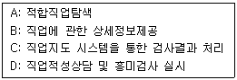
- D → C → A → B
- A → C → D → C
- D → A → B → C
- A → D → C → B
(정답률: 83%)
5. 직업상담사가 실시하는 상담영역과 거리가 먼 것은?
- 학업상담
- 진로상담
- 산업상담
- 장애자 직업상담
(정답률: 73%)
6. 내담자 중심 상담이론에 대한 설명으로 틀린 것은?
- 내담자들이 완전히 기능하는 사람이 될 수 있다고 보았다
- 인간은 자신이 나아가야 할 방향을 찾고 건설적 변화를 이끌어 낼 수 있는 능력이 있음을 가정한다.
- 내담자들로 하여금 사회적 관심을 갖도록 도우며 열등감이 감소할 수 있도록 돕는다.
- 기본적인 상담기법으로 적극적 경청, 감정반영, 명료화, 공감적 이해 등이 이용된다.
(정답률: 74%)
7. 다음 중 보딘(Bordin)이 제시한 직업문제의 심리적 원인에 해당하지 않는 것은?
- 인지적 갈등
- 확신의 결여
- 정보의 부족
- 내적 갈등
(정답률: 67%)
8. 특성-요인 직업 상담에서 상담사가 지켜야 할 상담원칙으로 틀린 것은?
- 내담자에게 강의하려 하거나 거만한 자세로 말하지 않는다.
- 간단한 어휘를 사용하고, 상담 초기에는 내담자에게 제공하는 정보를 비교적 큰 범위로 확대한다.
- 어떤 정보나 해답을 제공하기 전에 내담자가 정말로 그것을 알고 싶어 하는지 확인한다.
- 상담사는 자신이 내담자가 지니고 있는 여러 가지 태도를 제대로 파악하고 있는지 확인한다.
(정답률: 67%)
9. 직업상담을 위한 면담에 대한 설명으로 옳은 것은?
- 내담자의 모든 행동은 이유와 목적이 있음을 분명하게 인지한다.
- 상담과정의 원만한 전개를 위해 내담자에게 태도변화를 요구한다.
- 침묵에 빠지지 않도록 상담자는 항상 먼저 이야기를 해야 한다.
- 초기면담에서 내담자에 대한 기준을 부여한다.
(정답률: 80%)
10. 특성-요인 직업 상담의 과정 중 내담자가 능동적으로 참여하는 단계는?
- 상담 또는 치료단계
- 분석단계
- 진단단계
- 종합단계
(정답률: 65%)
11. 다음 상담의 인지적 명확성이 부족한 내담자의 유형과 상담자의 개입방법이 옳은 것은?
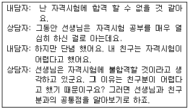
- 단순오정보 - 정보제공
- 구체성의 결여 - 구체화 시키기
- 자기인식의 부족 - 은유나 비유 쓰기
- 가정된 불가능 - 논리적 분석, 격려
(정답률: 78%)
12. 다음 중 집단 상담의 특징에 대한 설명으로 틀린 것은?
- 집단상담은 상담사들이 제한된 시간 내에서 적은 비용으로 보다 많은 내담자들에게 접근하는것을 가능하게 한다.
- 효과적인 집단에는 언제나 직접적인 대인적 교류가 있으며 이것이 개인적 탐색을 도와 개인의 성장과 발달을 촉진시킨다.
- 집단은 시간을 낭비하는 집단과정의 문제에 집착하게 되어 내담자의 개인적인 문제를 등한시할 수 있다.
- 집단에서는 구성원 각자의 사적인 경험을 구성원 모두가 공유하지 않기 때문에 비밀 유지가 쉽다.
(정답률: 87%)
13. 인지적 - 정서적 상담(RET)의 기본 모델에 대한 설명으로 옳은 것은?
- 선행사건 - 비합리적 신념체계 - 정서적/행동적결과 - 효과 - 논박
- 선행사건 - 정서적/행동적결과 - 비합리적 신념체계 - 논박 - 효과
- 선행사건 - 비합리적 신념체계 - 논박 - 정서적/행동적결과 - 효과
- 선행사건 - 비합리적 신념체계 - 정서적/행동적결과 - 논박 - 효과
(정답률: 54%)
14. 내담자가 수집한 대안 목록의 직업들이 실현 불가능할 때의 상담전략으로 틀린 것은?
- 브레인스토밍 과정을 통해 내담자의 대안직업 대다수가 부적절한 것을 명확히 한다.
- 최종 의사결정은 내담자가 해야 함을 확실히 한다.
- 내담자가 그 직업들을 시도하여 어려움을 겪을 때 개입한다.
- 객관적인 증거나 논리에서 추출한 것에 대해서만 대화하여야 한다.
(정답률: 88%)
15. 포괄적 직업상담 프로그램의 문제점으로 옳은 것은?
- 직업결정 문제의 원인으로 불안에 대한 이해와 불안을 규명하는 방법이 결여되어 있다.
- 직업상담의 문제 중 진학상담과 취업상담에 적합할 뿐 취업 후 직업 적응 문제들을 깊이 있게 다루지 못하고 있다.
- 직업선택에 미치는 내적 요인의 영향을 지나치게 강조한 나머지 외적 요인의 영향에 대해서는 충분하게고려하고 있지 못하다.
- 직업상담사가 교훈적 역할이나 내담자의 자아를 명료화하고, 자아실현을 시킬 수 있는 적극적 태도를취하지 않는다면 내담자에게 직업에 대한 정보를 효과적으로 알려줄 수 없다.
(정답률: 75%)
16. 생애진로사정의 구조에 해당되지 않는 것은?
- 적성과 특기
- 강점과 장애
- 진로사정
- 전형적인 하루
(정답률: 72%)
17. 다음은 직업상담기법 중 무엇에 대한 설명인가?
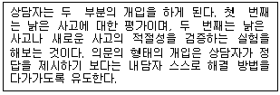
- 실제적 기법
- 심리측정 도구 사용기법
- 인지적 기법
- 논리적 기법
(정답률: 72%)
18. 다음 중 개인적 역할을 강조한 아들러(Adler)의 주장이 아닌 것은?
- 개인은 사회적 환경에 관해서만 이해할 수 있다.
- 성격과 특성요인이 가족집단 내에서의 운동의 표현이다.
- 개인은 일, 사회, 성(性) 등 3개의 주요 생애과제에 반응해야 한다.
- 한 가정에서 태어난 두 아이는 동일한 상황에서 자라는 아이이다.
(정답률: 91%)
19. 행동주의 상담에서 외적인 행동변화를 촉진시키는 방법이 아닌 것은?
- 주장훈련
- 자기관리 프로그램
- 행동계약
- 인지적 재구조화
(정답률: 85%)
20. 성격에 대한 자아상태를 부모(P), 성인(A), 아동(C)으로 구분하여 타인들과의 상호작용을 통해 자아상태를 분석 하는 상담 기법은?
- 교류분석적 상담
- 내담자 중심 상담
- 발달적 직업상담
- 특성-요인상담
(정답률: 89%)
21. 인지적 정보처리의 주요 전제로 틀린 것은?
- 진로선택은 인지적 및 정의적 과정들의 상호작용의 결과이다.
- 진로를 선택한다는 것은 하나의 문제해결 활동이다.
- 진로성숙은 진로문제를 해결할 수 있는 자신의 능력에 의존하지 않는다.
- 진로문제 해결은 고도의 기억력을 요하는 과제이다.
(정답률: 69%)
22. 직업전환을 원하는 내담자를 상담할 때 일차적으로 고려해야 할 사항이 아닌 것은?
- 나이와 건강을 고려해야 한다.
- 부모의 기대와 아동기 경험을 분석한다.
- 직업을 전환하는데 동기화가 되어 있는지 알아본다.
- 내담자가 직업을 바꾸는데 필요한 기술을 가지고 있는 지 평가해야한다.
(정답률: 83%)
23. 다음과 같은 특징을 가지는 수퍼의 진로 발달단계는?
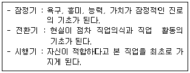
- 성장기
- 탐색기
- 확립기
- 유지기
(정답률: 74%)
24. 다운사이징과 조직구조의 수평화로 대변되는 조직변화에 적합한 종업원의 경력개발 프로그램으로 적합하지 않은 것은?
- 직무를 통해서 다양한 능력을 본인 스스로 학습할 수 있도록 많은 프로젝트에 참여시킨다.
- 표준화된 작업규칙, 고정된 작업시간, 엄격한 직무기술을 강화한 학습 프로그램에 참여시킨다.
- 불가피하게 퇴직한 사람들을 위한 퇴직자 관리 프로그램을 운영한다.
- 새로운 직무를 수행하는데 요구되는 능력 및 지식과 관련된 재교육을 실시한다.
(정답률: 67%)
25. 종업원이 직무에서 매우 성공적으로 수행한 경우나 실패한 경우들에 대한 자료를 수집한 후 그 사건들의 구체적인 행동을 알아내고 이 행동으로부터 지식, 기술, 능력을 수집하는 직무분석 방법은?
- 중요사건 기법
- 기능적 직무분석
- 직책분석 설문지
- 주제전문가 직무분석(SME)
(정답률: 82%)
26. 스트레스에 대처하기 위한 포괄적인 노력과 가장 거리가 먼 것은?
- 과정 중심적 사고방식에서 목표 지향적 초고속 사고로 전환해야 한다.
- 가치관을 전환시켜야한다.
- 스트레스에 정면으로 도전하는 마음이 있어야한다.
- 균형 있는 생활을 해야 한다.
(정답률: 75%)
27. 준거참조검사에 관한 설명으로 옳은 것은?
- 검사점수를 다른 사람의 점수와 비교하여 어떤 수준인지 알아낸다.
- 상대적인 정보를 제공한다.
- 성격이나 적성검사에 주로 사용된다.
- 기준점수는 검사, 조직의 특성, 시기 등에 따라 달라질 수 있다.
(정답률: 69%)
28. GATB 직업적성검사의 하위검사 중에서 둘 이상의 적성을 검출하는 데 이용되는 검사는?(오류 신고가 접수된 문제입니다. 반드시 정답과 해설을 확인하시기 바랍니다.)
- 기구대조검사
- 평면도판단검사
- 어휘검사
- 계수검사
(정답률: 8%)
29. 심리검사에서 규준이란?(오류 신고가 접수된 문제입니다. 반드시 정답과 해설을 확인하시기 바랍니다.)
- 한집단의 특성을 가장 간편하게 표현하기 위한 개념으로 그 집단의 대표값을 말한다.
- 한 집단의 수치가 얼마나 동질적인지를 표현하기 위한 개념으로 점수들이 그 집단의 평균치로부터 벗어난 평균거리를 말한다.
- 서로 다른 체계로 측정한 점수들을 동일한 조건에서 비교하기 위한 개념으로 원 점수에서 평균을 뺀 후 표준편차로 나눈 값을 말한다.
- 원점수를 표준화된 집단의 검사점수와 비교하기 위한 개념으로 대표집단의 검사점수 분포도를 작성하여 개인의 점수를 해석하기 위한 것이다.
(정답률: 0%)
30. 스트레스와 직무수행의 관계에 대한 설명으로 옳은 것은?
- 스트레스와 직무수행의 관련성은 미미하다.
- 스트레스가 너무 높은 경우에는 직무수행이 높아질 수 있다.
- 스트레스 수준이 너무 높거나 낮으면 직무수행은 떨어지는 역U자형 관계이다.
- 스트레스로 인해 직무수행이 저하되다 일정한 수준에 이르면 더 이상 떨어지지 않고 일정 수준을 유지한다.
(정답률: 84%)
31. K-WAIS의 동작성 검사에 해당하지 않는 것은?
- 바꿔 쓰기
- 토막 짜기
- 숫자외우기
- 빠진 곳 찾기
(정답률: 75%)
32. 미국 AT&T사에서 처음 운영한 이래 직원들의 관리능력을 평가하기 위한 방법으로 사용된 것으로, 수일간에걸쳐 면접, 리더 없는 집단토의, 비즈니스게임 등 다양한 형태의 실습을 한 뒤 복수의 전문가로 구성된 평가자로부터 리더십 의사소통 능력 등을 평가하는 방식은?
- 평가기관
- 경력워크숍
- 조기발탁제도
- 후견인 프로그램
(정답률: 75%)
33. 긴즈버그가 제시한 진로발달단계의 현실기에서 특정직업분야에 몰두하게 되는 세분단계는?
- 능력단계
- 탐색단계
- 특수화단계
- 구체화단계
(정답률: 46%)
34. 다음이 설명하고 있는 직무 및 조직관련 스트레스 요인은?
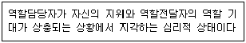
- 역할갈등
- 산업의 조직문화
- 과제특성
- 역할모호성
(정답률: 88%)
35. 경력개발과정 중 경력개발단계에 해당하는 것은?
- 경력 상담과 경력목표 설정
- 구성원의 인적자료 수집
- 직무분석과 인력개발 및 인력계획
- 경력기회에 대한 커뮤니케이션
(정답률: 65%)
36. 다음 중 직무분석 자료의 특성으로 틀린 것은?
- 최신의 정보를 반영해야 한다.
- 논리적으로 체계화되어야 한다.
- 한 가지 목적으로만 사용되어야 한다.
- 가공하지 않은 원 상태의 정보이어야 한다.
(정답률: 77%)
37. 고용주는 직무수행에 필요한 지식, 기술, 능력들을 평가하는 검사들을 개발한다. 이러한 검사의 내용이실제 직무와 얼마나 관련되어 있는지를 살펴보기 위해서는 무엇을 살펴 보아야하는가?
- 구성타당도
- 내용타당도
- 안면타당도
- 준거관련 타당도
(정답률: 80%)
38. 롭퀴스트와 데이비스의 직업적응이론에서 직업적응방식에 관한 설명으로 틀린 것은?
- 융통성-개인이 작업환경과 작업 성격 간의 부조화를 참아내는 정도
- 끈기-환경이 자신에게 맞지 않아도 개인이 얼마나 오랫동안 견뎌낼 수 있는지의 정도
- 적극성-개인이 작업환경을 개인적 방식과 좀 더 조화롭게 만들어가려고 노력하는 정도
- 반응성-개인이 작업성격의 변화로 인해 작업환경에 반응하는 정도
(정답률: 65%)
39. 다음 중 직무분석단계를 바르게 나열한 것은?
- 직무분석->직업분석->작업분석
- 직업분석->직무분석->작업분석
- 작업분석->직무분석->직업분석
- 직무분석->작업분석->직업분석
(정답률: 74%)
40. 다음이 설명하는 홀랜드가 제시한 직업 흥미 유형은?
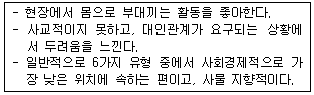
- 현실적 유형
- 사회적 유형
- 탐구적 유형
- 예술적 유형
(정답률: 80%)
2과목: 직업정보론(노동시장론 포함)
41. 한국직업정보시스템에서 제공하는 학과정보 중 공학계열에 해당하는 학과가 아닌 것은?
- 천문우주학과
- 건축설비학과
- 조경학과
- 메카크로닉스공학과
(정답률: 60%)
42. 통계청의 경제활동인구조사에서 취업자에 대한 설명으로 틀린 것은?
- 임시근로자 - 고용계약기간이 1개월 이상 1년 미만인 자
- 일용근로자 - 임금 또는 봉급을 받고 고용되어 있으나 고용계약기간이 1개월 미만인자
- 자영업주 - 사업규모에 상관없이 한 사람 이상의 유급 고용원을 두거나(고용주), 유급종업원 없이 자기 혼자 또는 무급가족종사자와 함께 일을 하는 자(자영자)
- 무급가족종사자 - 자기가족의 일원이 경영하는 사업체에서 일정한 보수없이 주당30시간 이상 일한 자
(정답률: 71%)
43. 워크넷에서 제공하는 선호직종임금정보가 아닌 것은?
- 학력별 선호직종임금
- 연령별 선호직종임금
- 남녀별 선호직종임금
- 장애인 선호직종임금
(정답률: 50%)
44. 한국직업전망(2007)의 수록직업 선정에 대한 설명으로 틀린 것은?
- 「산업 ·직업별 고용구조조사」의 종사자 수, 대분류 상의 직업분포도, 청소년 및 구직자의 선호도,직업정보 제공의 가치에 대한 전문가 의견 등을 반영하여 선정하였다.
- 한국고용직업분류의 세분류 직업 392개 가운데 종사자 수가 2,000명 이상인 직업을 선정하고 직업을 선정하고 직업별 해당 전문가들과 연구진들의 의견을 종합하여 최종 수록 직업을 선정하였다.
- 자원공학기술자 및 해양공학기술자 등을 일반인의 관심이 높거나 직업으로서 가치가 높다고 인정되지만 직업종사자가 수가 적어 수록직업으로 선정하지 않았다.
- 직무가 유사하거나 일반인의 관심이 상대적으로 낮은 제조 기능직 분야의 장치조작원, 조립원, 단순노무자 등의 지업은 종사자 수가 많아도 여러 직업을 하나의 직업으로 통합하여 수록하였다.
(정답률: 15%)
45. 국가기술자격 서비스분야의 응시자격으로 틀린 것은?(오류 신고가 접수된 문제입니다. 반드시 정답과 해설을 확인하시기 바랍니다.)
- 사회조사분석사 1급 - 해당 실무에 3년 이상 종사한 자
- 직업상담자 2급 - 제한 없음
- 컨벤션기획사 1급 - 응시하고자 하는 종목이 속하는 동일직무분야에서 11년 이상 실무에 종사한 자
- 소비자전문상담사 1급 - 해당종목의 2급 자격취득 후 소비자상담 실무경력 3년 이상인 자
(정답률: 9%)
46. 다음 중 종목폐지로 인해 2009년도에 시행되지 않는 국가 기술자격은?
- 전자산업기사
- 굴착산업기사
- 철도차량산업기사
- 생산자동화기능사
(정답률: 43%)
47. 직업정보 분석 시 유의점으로 틀린 것은?
- 동일한 정보는 한 가지 측면으로 분석하여 단일해석 한다.
- 전문적인 시각에서 분석한다.
- 분석은 원자료의 생산일, 자료표집방법, 대상, 자료의 양 등을 검토한다.
- 직업정보원과 제공원에 대하여 제시한다.
(정답률: 71%)
48. 워크넷에서 제공하는 직업선호도 검사 L형과 S형의 공통적인 하위검사는?
- 흥미검사
- 성격검사
- 생활사 검사
- 구직동기검사
(정답률: 55%)
49. 한국표준직업분류(2007)의 군인직종에 대한 설명으로 틀린 것은?
- 별도로 대분류 A로 분류되어 있다.
- 직무를 기준으로 분류한다.
- 민간 기업의 예비군 중대장은 3127 총무 사무원으로 분류한다.
- 의무복무중인 사병은 제외한다.
(정답률: 39%)
50. 한국직업사전(2009)의 부가직업정보 중 작업환경에 대한 설명으로 틀린 것은?
- 작업환경은 해당직업의 직무를 수행하는 작업원에게 직접적으로 물리적, 신체적 영향을 미치는 작업장의환경요인을 나타낸 것이다.
- 작업환경의 측정은 조사자가 느끼는 신체적 반응 및 작업자의 반응을 듣고 판단한다.
- 작업환경은 저온·고온, 다습, 소음·진동, 위험내재, 대기환경으로 구분한다.
- 작업환경은 사업체의 규모와 특성에 따라 달라질 수 있으나 동일사업체의 경우에는 작업장마다 절대적인 기준이 된다.
(정답률: 63%)
51. 한국표준직업분류(2007)상 직업 활동에 해당하는 경우는?
- 명확한 주기는 없으나 계속적으로 동일한 형태의 일을 하여 수입이 있는 경우
- 연금법, 생활보호법, 국민연금법 및 고용보험법 등의 사회보장에 의한 수입이 있는 경우
- 이자, 주식배당, 임대료(전세금, 월세금) 등과 같은 자산 수입이 있는 경우
- 예금인출, 보험금 수취, 차용 또는 토지나 금융자산을 매각하여 수입이 있는 경우
(정답률: 67%)
52. 한국표준산업분류(2008)의 하나 이상의 장소에서 이루어지는 단일 산업 활동의 통계 단위는?
- 기업집단
- 기업체단위
- 활동유형단위
- 지역단위
(정답률: 59%)
53. 다음 설명에 해당하는 한국직업사전(2009)에서의 작업강도는?
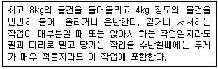
- 아주 가벼운 작업
- 가벼운 작업
- 보통 작업
- 힘든 작업
(정답률: 69%)
54. 일정기간 동안 구인신청이 들어온 모집인원 중 해당 월말 현재 알선 가능한 인원수의 합을 무엇이라 하는가?
- 구인인원
- 유효구인인원
- 신규구인인원
- 유효구인배율
(정답률: 62%)
55. 한국직업사전(2009)의 직업명세 중 자료(data)와 관련된 직무기능에 관한 설명으로 틀린 것은?
- 종합 - 사실을 발견하고 지식개념 또는 해석을 개발하기 위해 자료를 종합적으로 분석한다.
- 조정 - 데이터의 분석에 기초하여 시간, 장소, 작업, 순서, 활동 등을 결정한다.
- 계산 - 수를 세거나 사칙연산을 실시하고 사칙연산과 관련하여 규정된 활동을 수행하거나 보고한다.
- 수집 - 자료, 사람, 사물에 관한 정보를 수집, 대조, 분류한다.
(정답률: 65%)
56. 한국표준산업분류(2008)의 산업분류기준에 해당되지 않는 것은?
- 투입물의 특성
- 생산 활동의 일반적인 결합형태
- 생산된 재화 또는 제공된 서비스의 특성
- 생산단위가 수행하는 산업 활동의 차별성
(정답률: 36%)
57. 신규취업자의 노동력 수급상황, 채용, 구인 및 이직상황은 어떤 고용정보에 속하는가?
- 경제 및 산업동향에 관한 정보
- 노동시장, 고용 및 실업동향에 관한 정보
- 근로조건에 관한 정보
- 고용관리에 관한 정보
(정답률: 67%)
58. 다음 ( ）안에 들어갈 직업정보를 전달하는 유형별 장단점으로 옳은 것은?
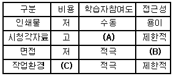
- A - 수동, B - 제한적, C - 고
- A - 적극, B - 제한적, C - 고
- A - 수동, B - 용이, C - 저
- A - 적극, B - 용이, C - 저
(정답률: 59%)
59. 한국표준직업분류(2007)의 포괄적인 업무에 대한 직업분류 원칙에 해당되지 않는 것은?
- 주된 직무 우선 원칙
- 최상급 직능수준 우선 원칙
- 생산업무 우선 원칙
- 수입 우선의 원칙
(정답률: 64%)
60. 다음 중 직업별 임금관련 정보를 제공하지 않는 것은?
- 한국직업전망
- 한국직업정보시스템
- 한국직업사전
- 워크넷 Jop Map
(정답률: 60%)
61. 임금상승에 따라 노동공급곡선이 후방굴절(상단부분에서 좌상향으로 굽어짐)을 보이는 이유는 ?
- 임금상승 시 대체효과가 소득효과보다 크기 때문이다.
- 임금상승 시 소득효과가 대체효과보다 크기 때문이다.
- 임금상승 시 소득효과가 대체효과가 같아지기 때문이다.
- 임금상승 시 노동자들이 일을 더하려고 하기 때문이다.
(정답률: 60%)
62. 다음 중 기업의 종업원주식소유제 혹은 종업원지주제 도입에 따른 효과로 틀린 것은?
- 노사관계 악화
- 기업금융 및 재무구조의 건전화 수단
- 종업원의 기업인수 지원을 통한 고용안전 도모
- 공격적 기업인 수 및 합병에 대한 효과적 방어수단
(정답률: 75%)
63. 직무분석과 직무평가를 기초로 하여 직무의 중요성과 난이도 등 직무의 상대적 가치에 따라 개별임금을 결정하는 것은?
- 연공급
- 직무급
- 직능급
- 기본급
(정답률: 65%)
64. 노동수요특성별 임금격차의 원인 중 경쟁적 요인이 아닌 것은?
- 인적자본량
- 보상적 임금격차
- 비효율적 연공급 제도의 영향
- 기업의 합리적 선택으로서 효율성 임금정책
(정답률: 59%)
65. 생산성 임금제를 따를 때 실질 생산성 증가율 5% 이고 물가상승률이 2% 하고 하면 명목임금의 인상분은?
- 2%
- 5%
- 7%
- 10%
(정답률: 62%)
66. 다음 중 여성의 경제활동참가를 결정하는 요인에 관한 설명으로 틀린 것은?
- 여타 조건이 일정불변일 때 시간의 경과에 따라 시장 임금이 증가할수록 여성의 경제활동참가율은 높아진다.
- 도시화의 진전은 여성으로 하여금 가정재 생산에 있어 시장구입상품에 보다 의존하게 만들어 시장노동의 가능성을 넓혀준다.
- 단시간근로자에 대한 기업의 수요가 증가하면 기혼여성의 경제활동참가를 낮추는 요인으로 작용한다.
- 탁아시설의 미비는 여성의 보상요구임금 수준을 높여 기혼여성의 경제활동참가를 낮추는 요인으로 작용한다.
(정답률: 58%)
67. 마찰적 실업을 해소하기 위한 가장 효과적인 정책은?
- 성과급제도를 도입한다.
- 근로자 파견업을 활성화한다.
- 협력적 노사관계를 구축한다.
- 구인 ·구직 정보제공시스템의 효율성을 제고한다.
(정답률: 62%)
68. 직업이나 직종의 여하를 불문하고 동일산업에 종사하는 노동자가 조직하는 노동조합의 형태는?
- 직업별 노동조합
- 산업별 노동조합
- 기업별 노동조합
- 일반 노동조합
(정답률: 67%)
69. 산업별 노동조합에 대응할 만한 사용자 단체가 없거나, 이러한 사용자 단체가 있더라도 각 기업별 특수한 사정이있을 경우 산업별 ·노동조합이 개별기업과 개별적으로 교섭하는 단체교섭의 유형은?
- 대각선교섭
- 집단교섭
- 통일교섭
- 기업별 교섭
(정답률: 75%)
70. 다음 중 노동수요에 영향을 미치는 요인이 아닌 것은?
- 임금수준
- 기술수준
- 노동생산성
- 생산가능인구의 크기
(정답률: 43%)
71. 노동수요의 탄력성에 관한 설명으로 옳은 것은?
- 노동수요의 변화율에 대한 임금의 변화율이다.
- 노동수요의 변화율에 대한 제품수요의 변화율이다.
- 임금의 변화율에 대한 노동수요량의 변화율이다.
- 임금의 변화율에 대한 제품수용의 변화율이다.
(정답률: 54%)
72. 최저임금제가 노동시장에 미치는 효과로 볼 수 없는 것은?
- 잉여인력 발생
- 부가급여 축소
- 숙련직의 임금하락
- 노동수요량 감소
(정답률: 48%)
73. 다음의 현상을 설명하는 실업의 종류와 대책을 연결한 것으로 옳은 것은?
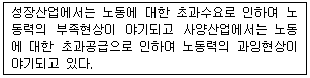
- 마찰적 실업 - 구인, 구직정보망 확충
- 경기적 실업 - 유효수요의 증대
- 구조적 실업 - 인력정책
- 기술적 실업 - 기술혁신
(정답률: 37%)
74. 노동쟁의 조정방법 중에서 강제성을 띠는 것은?
- 알선, 조정
- 중재, 긴급조정
- 조정, 긴급조정
- 조정, 중재
(정답률: 64%)
75. 생산물시장과 노동시장이 완전경쟁일 때 노동의 한계생산량이 10개이고 생산물 가격이 500원이며시간당 임금이 4,000원이라면 이윤을 극대화하기위한 기업의 반응으로 옳은 것은?
- 임금을 올린다.
- 노동을 자본으로 대체한다.
- 노동의 고용량을 증대시킨다.
- 고용량을 줄이고 생산을 감축한다.
(정답률: 63%)
76. 다음 중 내부노동시장이 갖는 장점이 아닌 것은?
- 내부승진이 많다.
- 장기적인 고용관계가 성립한다.
- 기업의 특수한 인적자원 육성에 유리하다.
- 임금비용이 경기변화에 유연하게 움직인다.
(정답률: 69%)
77. 단체교섭 시 사용자의 교섭력 원천의 아닌 것은?
- 파업근로자 대신 다른 근로자로 대체할 수 있는 능력
- 기업의 재정능력
- 소비자들에게 호소하는 불매운동
- 직장폐쇄 권리
(정답률: 58%)
78. 완전경쟁 하에서 노동의 수요곡선을 우하향하게 하는 주된 요인은 무엇인가?
- 노동의 한계생산력
- 노동의 가격
- 생산물의 가격
- 한계비용
(정답률: 45%)
79. 보상적인 임금격차이론에 대한 설명으로 틀린 것은?
- 위험한 직업에는 높은 임금이 지급되는 것이 일반적이다.
- 정부의 안전에 관한 규제가 항상 근로자에게 이익이 되는 것은 아니다.
- 보상적인 임금격차가 적절하게 기능한다면 위험하고 더럽고 어려움 (3D) 업종의 구인난은 해소될 수 있다.
- 기업의 산재위험에 관한 도덕적 해이는 산재보험에 의해 치유될 수 있다.
(정답률: 57%)
80. 다음 중 자발적 노동이론(voluntary mobility)에 따른 순수익의 현재가치(present value)를 결정해주는 요인이아닌 것은?
- 새로운 직장의 고용규모
- 새 직장에서의 예상 근속년수
- 장래의 기대되는 수익과 현 직장에서의 수익의 차를 현재 가치로 할인해 주는 할인율
- 노동이동에 따른 직ㆍ간접비용
(정답률: 65%)
3과목: 노동관계법규
81. 근로자직업능력 개발법상 직업능력개발훈련의 기본원칙으로 틀린 것은?
- 직업능력개발훈련은 근로자 개인의 희망, 적성, 능력에 맞게 근로자의 생애에 걸쳐 체계적으로 실시되어야 한다.
- 직업능력개발훈련은 사회적으로 공공성의 원리에 따라 국가 주도로 진행되어야 한다.
- 작업능력개발훈련이 필요한 근로자에 대하여 균등한 기회가 보장되도록 실시되어야 한다.
- 직업능력개발훈련은 교육관계법에 따른 학교교육 및 산업현장과 밀접하게 연계될 수 있도록 하여야 한다.
(정답률: 59%)
82. 직업안전법상 근로자 모집에 관한 설명으로 틀린 것은?
- 국외에 취업할 근로자를 모집하는 경우에는 노동부장관의 허가를 받아야 한다.
- 근로자를 고용하고자 하는 자는 신문, 잡지, 기타에 의하여 자유로이 근로자를 모집할 수 있다.
- 모집이란 함은 근로자를 고용하고자 하는 자가 취직하고자 하는 자에게 피용자가 되도록 권유하거나 다른 사람으로 하여금 권유하게 하는 것을 말한다.
- 근로자를 모집하고자 하는 자와 그 모집에 종사하는 자는 명목의 여하를 불문하고 응모자로부터 그 모집과 관련하여 금품 기타 이익을 취하여서는 안 된다.
(정답률: 47%)
83. 근로기준법상 해고예고의 적용이 제외되는 근로자가 아닌 경우는?
- 일용직근로자로서 3개월을 계속 근무하지 아니한 자.
- 2개월 이내의 기간을 정하는 사용된 자
- 월급근로자로서 6개월이 되지 못한 자
- 계절적 업무에 1년의 기간을 정하여 사용된 자
(정답률: 60%)
84. 고령자 고용촉진법상 고령자고용촉진에 관한 설명으로 옳은 것은?
- 상시근로자 300인 이상 사업주는 법령에서 정한 기준고용률 이상의 고령자를 고용하여야 한다.
- 기준고용률에 미달하는 고령자를 고용하는 사업주는 매년 노동부장관에게 고령고용자부담금을 납부하여야 한다.
- 기준고용률을 초과하여 고용하는 사업주에게는 고용보험법상 고령자 고용촉진 장려금을 지급할 수 있으며, 조세감면 혜택이 주어진다.
- 국가 및 지방자치단체, 정부투자기관과 정부출현기관의 장은 그 기간의 우선고용직종에 고령자와 준고령자를 우선적으로 채용하도록 노력해야 한다.
(정답률: 47%)
85. 고용정책심의회의 심의· 조정사항에 해당하지 않는 것은?
- 고용보험요율의 변경에 관한 사항
- 고용정책 추진실적의 평가에 관한 사항
- 시·도의 고용촉진· 직업능력개발 및 실업대책에 관한 중요사항
- 인력의 공급구조와 산업구조의 변화 등에 따른 고용 및 실업대책에 관한 사항
(정답률: 34%)
86. 헌법상의 근로자의 노동3권에 속하지 않은 것은?
- 단결권
- 단체교섭권
- 단체행동권
- 이익균점권
(정답률: 72%)
87. 고용보험법상 고용보험법의 적용대상이 될 수 있는 근로자는?
- 1개월간의 소정근로시간이 60시간 미만인 자
- 사립학교 교직원 연금법의 적용을받는 자
- 별정우체국법에 의한 별정우체국직원
- 생업을 목적으로 근로를 제공하는 자 중 3월 이상 계속하여 근로를 제공하는 자
(정답률: 74%)
88. 고용보험 법규상 둘이상의 사업에 일용근로자가 아닌 자로 동시에 고용되어 있는 경우 피보험자자격을 취득하는 순서로 옳은 것은?
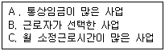
- A → B → C
- B → C → A
- A → C → B
- C → A → B
(정답률: 45%)
89. 근로자직업능력개발법상 사업주와 직업능력개발훈련을 받고자 하는 근로자간에 체결하는 훈련계약에 관한 설명으로 틀린 것은?
- 훈련이수 후 6년 이내의 기간에서 훈련기간의 2배를 초과하지 않는 기간 동안 사업주가 지정하는 업무에 종사할 수 있다.
- 훈련계약이 체결되지 아니한 경우라도 고용근로자가 받은 직업능력개발훈련에 대하여는근로를 제공한 것으로본다.
- 훈련계약을 체결하지 않은 사업주는 당해 근로자와의 합의가 있을 경우 기준근로시간 외의 시간에 직업능력 개발훈련을 실시 할 수 있다.
- 기준근로시간 외의 훈련시간에 대하여는 생산시설을 이용하거나 근무 장소에서 하는 직업능력개발훈련의 경우 제외하고는 연장근로와 야간근로에 해당하는 임금을 지급하지 아니 할 수 있다.
(정답률: 50%)
90. 근로기준법상 연소자보호에 관한 설명으로 틀린 것은?
- 미성년자는 독자적으로 임금을 청구할 수 있다.
- 미성년자의 동의가 있으면 친권자 또는 후견인은 미성년자를 대리하여 근로계약을 체결할 수 있다.
- 근로계약이 미성년자에게 불리하다고 인정되는 경우에는 친권자, 후견인 또는 노동부장관은 이를 해지할 수 있다.
- 사용자는 18세 미만인 자에 대하여는 그 연령이 증명하는 증명서와 친권자 또는 후견인의 동의서를 사업장에 갖추어 두어야 한다.
(정답률: 46%)
91. 직업안정법령상 직업정보제공사업자의 준수사항으로 틀린 것은?
- 구인자의 업체명(또는 성명)이 표시되어 있지 아니하거나 구인자의 연락처가 사서함 등으로 표시되어 구인자의 신원이 확실하지 아니한 구인광고를 게재하지 아니할 것.
- 직업정보제공매체또는 직업정보제공사업의 광고문에 "(무료)취업상담", "취업추천", "취업지원"등의 표현을 사용하지 아니할 것.
- 직업정보제공매체의 구인·구직의 광고에는 직업정보제공사업자의 주소 또는 전화번호는 기재하지 아니할것.
- 구직자의 이력발송을 대행하거나 구직자에게 취업추천서를 발부하지 아니할 것.
(정답률: 54%)
92. 고용정책기본법령상 대량고용변동의 신고기준으로 옳은 것은?
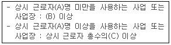
- A : 100, B : 10, C : 100분의 10
- A : 100, B : 20, C : 100분의 20
- A : 100, B : 30, C : 100분의 10
- A : 300, B : 30, C : 100분의 10
(정답률: 67%)
93. 남녀고용평등법과 일 가정 양립 지원에 관한 법률상 직장 내 성희롱예방 관한 설명으로 틀린 것은?
- 사업주는 직장 내 성희롱예방을 위한 교육을 연1회 이상 실시하여야 한다.
- 사업주는 근로자 모두가 여성으로 구성된 사업의 사업주는 직장 내 성희롱예방교육을 생략 할 수 있다.
- 사업주는 성희롱 예방교육을 노동부장관이 지정하는 기관에 위탁하여 실시할 수 있다.
- 사업주는 근로자가 고객에 의한 성희롱의 피해를 주장하는 것을 이유로 해고나 그 밖의 불이익한 조치를 하여서는 아니 된다.
(정답률: 72%)
94. 고용보험법상 실업급여에 포함되지 않는 것은 ?
- 생계비
- 구직급여
- 광역 구직활동비
- 조기재취업 수당
(정답률: 39%)
95. 고령자촉진법상 정년에 관한 규정으로 틀린 것은?
- 사업주가 근로자의 정년을 정하는 경우에는 그 정년이 60세 이상이 되도록 노력하여야 한다.
- 노동부장관은 정년을 현저히 낮게 정한 사업주에 대하여 정연연장에 관한 계획을 작성하여 제출 할 것을 요구할 수 있다.
- 사업주는 제출한 정연연장에관한 계획이 적절하지 아니하다고 인정될 때에는 과태료를 부과할 수 있다.
- 고령자인 정년퇴직자를 재고용할 때는 당사자 간의 합의에 의하여 임금의 결정을 종전과 달리 할 수 있다.
(정답률: 34%)
96. 직업안전법령상 유료직업소개사업의 등록할 수 없는 자는?
- 조합원이 100인 이상인 단위노동조합에서 노동조합 업무 전담자로 1년의 근무경력이 있는 자
- 국가기술자격법에 의한 직업상담사2급의 국가기술자격이 있는 자
- 국가공무원 또는 지방공무원으로 5년 근무경력이 있는 자
- 초ㆍ중등학교법에 의한 교원자격증을 가지고 있는 자로서 3년 이상의 교사근무경력이 있는 자
(정답률: 69%)
97. 근로기준법상 취업규칙에 관한 설명으로 틀린 것은?
- 취업규칙은 근로자에게 불이익하게 변경하는 경우에는 그 동의를 얻어야 한다.
- 취업규칙은 법령이나 해당사업 또는 사업장에 대하여 적용되는 단체협약과 어긋나서는 아니 된다.
- 취업규칙에 정한 기준에 미달하는 근로조건을 정한 근로계약은 그 자체가 유효하다.
- 상시 10인 이상의 근로자를 사용하는 사용자는 취업규칙을 작성하여 노동부장관에게 신고하여야 한다.
(정답률: 50%)
98. 고용보험의 심사청구와 관련된 설명으로 틀린 것은?
- 심사청구는 즉시 원처분의 집행을 정지시킨다.
- 결정은 원처분 등을 행한 직업안정기관의 장을 기속한다.
- 심사의 청구는 대통령령으로 정하는 바에 따라 문서로 하여야 한다.
- 직업안정기관은 심사청구서를 받은 날로 부터 5일 이내에 의견서를 첨부하여 심사청구서를 심사관에게 보내야한다.
(정답률: 38%)
99. 남녀고용평등과 일 가정 양립 지원에 관한 법률상 육아휴직에 관한 설명으로 틀린 것은?
- 근로자가 육아휴직종료 예정일을 연기하려는 경우에는 한번만 연기할 수 있다.
- 사업주는 육아휴직을 마친 후에는 휴직전과 같은 업무 또는 같은 수준의 임금을 지급하는 직무에 복귀시켜야 한다.
- 사업주는 같은 영유아에 대하여 배우자가 육아휴직을 하고 있는 근로자에 대해 육아휴직을 허용해야 한다.
- 사업주는 육아휴직을 이유로 해고나 그 밖의 불리한 처우를 하여서는 아니 되며, 육아 휴직 기간에는 그 근로자를 해고하지 못한다.
(정답률: 60%)
100. 근로자직업능력 개발법령상 직업능력개발교사 2급의 자격기준으로 틀린 것은?
- 직업능력개발훈련교사 3급의 자격을 받고 3년 이상의 교육훈련경력이 있는 자로서 향상훈련을 받은 자
- 기술사또는 기능장 자격증을 소지하고 노동부령이 정하는 훈련을 받은 자
- 전문대학, 기능대학 또는 대학의 전임강사 이상으로서 2년 이상의 교육훈련경력이 있는 자
- 직업능력개발훈련교사의 양성을 위한 훈련과정(4년제 과정)을 수료한 자로서 산업기사 이상의 자격증 소지한자.
(정답률: 34%)